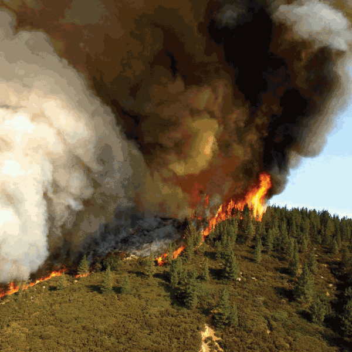

<body>
    

    <a
        class="hotspot centered cursor-move"
        href="./22fire_level.html"
        style="left: 64.888%; top: 61.666%; width: 39%; height: 27%"
        title="the fiery path|there's a hot path of fire, which you shouldn't approach."
    ></a>

    <a-dumpling>
        <a
            class="cursor-move"
            style="font-size: 5vw; text-decoration: none; opacity: 0.5"
            href="./10forest_edge.html"
            title="a path behind you"
        >
            🔙
        </a>
    </a-dumpling>

    <s-cript target="assistant">
        --- enter
            [once]The fire level...
        ==> Click

        --- Click
            There's danger ahead, be careful my dumpling.
        ==> Click
    </s-cript>

</body>